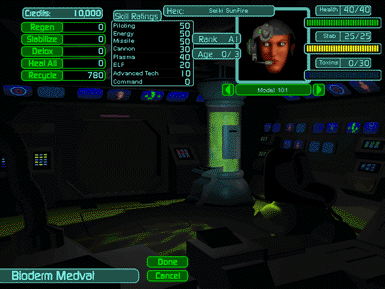

This is where you recuperate and recycle your Bioderm troops. The list of options include:
Regen – Totally heals damaged health, which results in one of three ways:
— Hits to the Bioderm during mission combat;
— A damaged life support system in a corrosive atmosphere;
— Over time – Bioderms lose health with each turn if they have exceeded their toxin threshold.
Detox — Removes all toxins from your Bioderms which result from the injection of StimGland into their systems.
Stabilize — Restores Genetic Stability. Every time a Bioderm's Herc, or the Bioderm itself, is hit during battle, its Genetic Stability decreases. Stability is also reduced with each dose of Jackup Stimgland administered and once the Bioderm's Toxin threshold is exceeded. When a Bioderm loses half of its Genetic Stability (the first symptom is a blue face), its skill ratings will drop slightly. When Stability drops below zero, skill ratings will drop drastically. Once a skill stat reaches zero, the Bioderm will no longer perform a task which requires that skill. With Genetic Instability below zero, health will continue to decrease until death or until the Bioderm is bolstered by a Command Bioderm.
Heal All — Regenerates, detoxifies, and stabilizes all Bioderms in your squad. This is the only option that affects multiple Bioderms with a single command; costs the number of credits indicated.
Recycle — Sells the Bioderm back to the BGM (base genetic matrix) pool. This “tissue reclamation” adds the number of credits shown to your total.
Going to the Medvat is very inexpensive. Generally, it is far more cost effective to heal bioderms than risk taking them to battle without healing or detoxing them.
